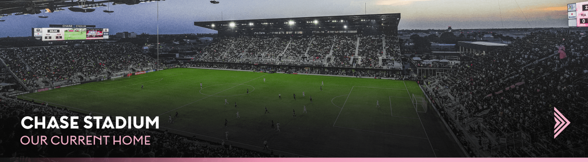

Plan a Tour.

Inter Miami CF is proud to join JPMorgan and Chase and reimagine our home for years to come!
Inter Miami CF and JPMorgan Chase have come together over a shared commitment to investing in South Florida’s local communities and creating a stronger, more inclusive economy.
Inter Miami plays and trains at its 34-acre centralized facility, which is inclusive of the 19,100-capacity Chase Stadium, a 50,000-square-foot training center and seven fields in Fort Lauderdale, Florida. In addition to the MLS team, the Club fields the MLS NEXT Pro team Inter Miami CF II and a youth Academy for ages U-12 to U-17 as part of the MLS NEXT program.
We are excited to welcome you to #ChaseStadium!